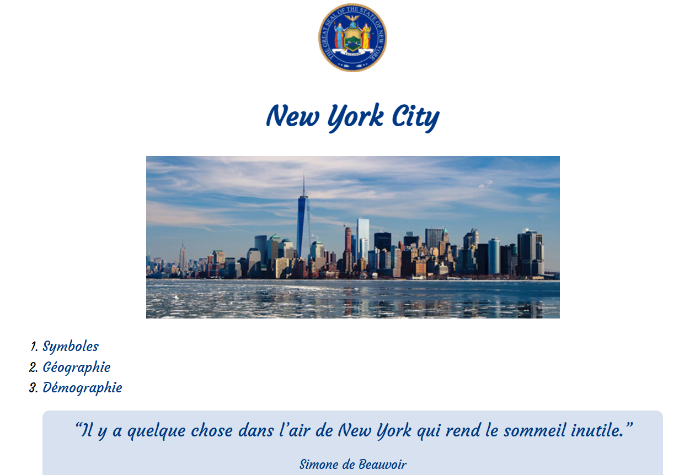
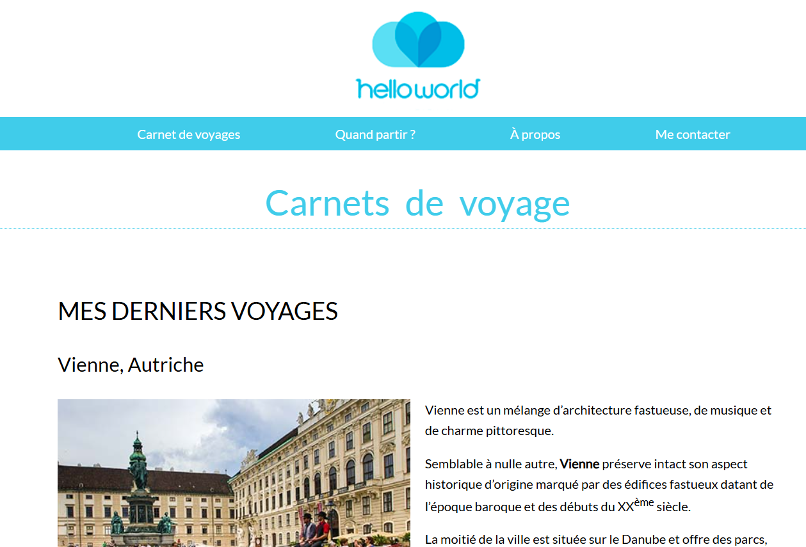
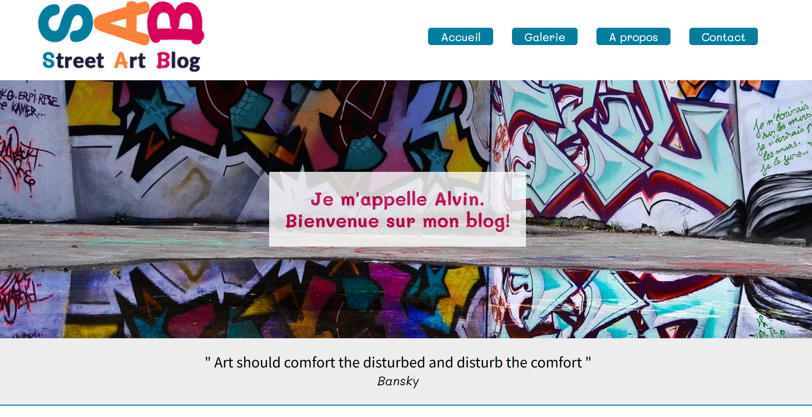
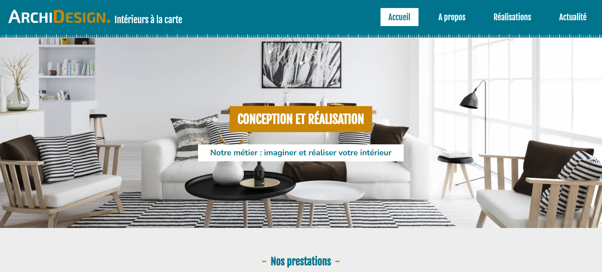
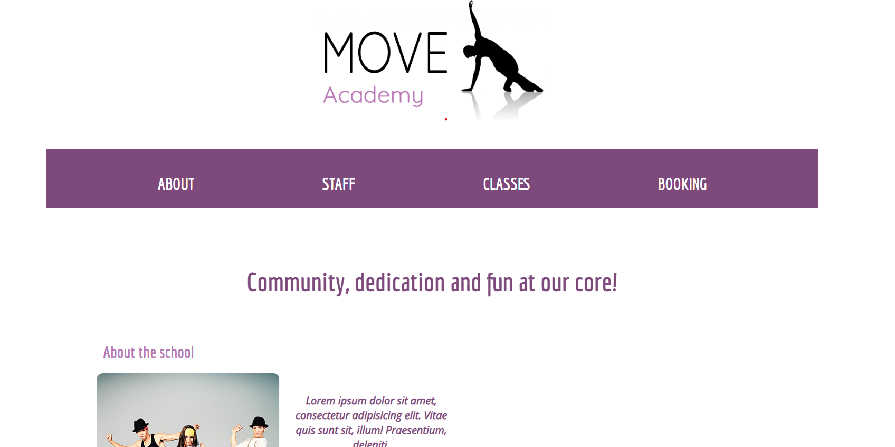
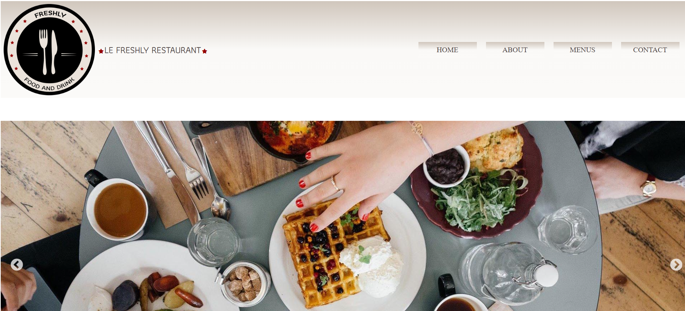
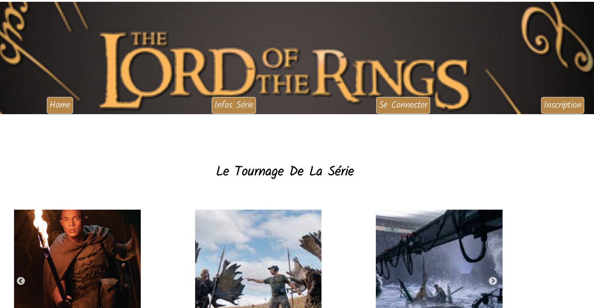
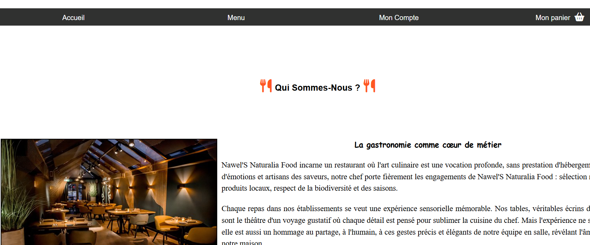

Mes Projets
Je vous présente mes projets, organisés chronologiquement depuis le début de ma formation jusqu'à son aboutissement. Ils illustrent ma progression, notamment avec mon projet final de restaurant, mis en ligne sur GitHub et les autres sur Netlify. De plus, j’ai eu l'opportunité de réaliser un projet pour l’association Jardins des Pointes, témoignant de l'évolution de mes compétences tout au long de mon parcours.
Je vous invite à découvrir mes projets en cliquant sur le bouton "Découvrir" de chaque projet.
Projet New york city
Site réalisé au début de formation sans responsive, juste aprendre à reproduire une maquette
DécouvrirProjet carnet de voyage
Site réalisé au début de formation sans responsive, juste aprendre à reproduire une maquette
DécouvrirArt Street
Site réalisé au début de formation sans responsive, juste aprendre à reproduire une maquette
DécouvrirArchi Design
Projet réaliser au cour de ma formation a la 3WACADEMY, au debut de ma formation.
DécouvrirMove Academy
Projet réaliser au cour de ma formation a la 3WACADEMY, au debut de ma formation.
DécouvrirProjet freshly restaurant
Projet réaliser au cour de ma formation a la 3WACADEMY, au debut de ma formation.
DécouvrirProjet les anneaux de pouvoir
Projet réaliser au cour de ma formation a la 3WACADEMY, mi formation.
DécouvrirProjet restaurant
Mon projet de fin de formation, un site réaliser avec Html,Css,Js,Php, base de donner, front et back avec connexion user et admin.
Découvrir sur GitHubProjet Jardin

site réaliser pour l'association jardins familliaux des pointes à Thorigny sur marne.
Découvrir